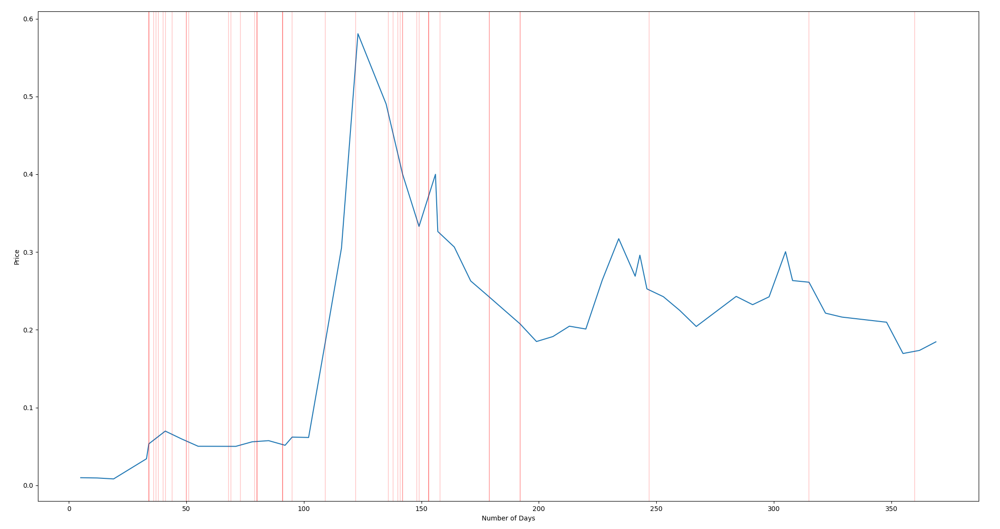

Elon Musk Twitter Tracker
Graph indicates price of DogeCoin with vertical lines showing Elon Musk tweets containing likely indicators of influencing the market movement.
Day 0 corresponds with 2020-12-20
- Elon Musks Tweets that we found were likely to correlate with movements in the price of DogeCoin, had an average of
315,003 likes and42,527 retweets - Elon tweeted the most about DogeCoin in the months of February (12 times), March (10 times) and May (11 times) of 2021.
- A correlation exists between Elon's tweets and the price of DogeCoin
Tesla merch buyable with Dogecoin
2022-01-14 06:18:50
Tesla will make some merch buyable with Doge & see how it goes
2021-12-14 10:34:23
Tuition is in Dogecoin & u get a discount if u have a dog
2021-10-31 18:20:50
Time is the ultimate currency
2021-09-03 08:47:10
Baby Doge, doo, doo, doo, doo, doo,
Baby Doge, doo, doo, doo, doo, doo,
Baby Doge, doo, doo, doo, doo, doo,
Baby Doge
2021-07-01 09:24:21
Release the Doge! https://t.co/9bXCWQLIhu
2021-07-01 08:43:41
“That’s not funny!” – Bitcoin maxis
2021-06-25 02:11:52
How many Bitcoin maxis does it take to screw in a lightbulb?
2021-06-25 02:10:31
#Bitcoin 💔 https://t.co/lNnEfMdtJf
2021-06-04 01:07:04
Someone suggested changing Dogecoin fees based on phases of the moon, which is pretty awesome haha
2021-05-24 20:29:33
If you’d like to help develop Doge, please submit ideas on GitHub & https://t.co/liAPQMFaQB @dogecoin_devs
2021-05-24 19:49:56
How much is that Doge in the window? https://t.co/bxTkWOr50V
2021-05-20 10:41:00
Credit to our Master of Coin
2021-05-19 15:41:10
Working with Doge devs to improve system transaction efficiency. Potentially promising.
2021-05-13 22:45:16
To be clear, I strongly believe in crypto, but it can’t drive a massive increase in fossil fuel use, especially coal
2021-05-13 21:11:46
Tesla & Bitcoin https://t.co/YSswJmVZhP
2021-05-12 22:06:14
Do you want Tesla to accept Doge?
2021-05-11 08:13:35
SpaceX launching satellite Doge-1 to the moon next year
– Mission paid for in Doge
– 1st crypto in space
– 1st meme in space
To the mooooonnn!!
https://t.co/xXfjGZVeUW
2021-05-09 22:41:43
Cryptocurrency is promising, but please invest with caution! https://t.co/A4kplcP8Vq
2021-05-07 04:24:20
The Dogefather
SNL May 8
2021-04-28 06:20:47
Doge Barking at the Moon https://t.co/QFB81D7zOL
2021-04-15 04:33:18
SpaceX is going to put a literal Dogecoin on the literal moon
2021-04-01 10:25:23
Pay by Bitcoin capability available outside US later this year
2021-03-24 07:10:43
Tesla is using only internal & open source software & operates Bitcoin nodes directly.
Bitcoin paid to Tesla will be retained as Bitcoin, not converted to fiat currency.
2021-03-24 07:09:34
You can now buy a Tesla with Bitcoin
2021-03-24 07:02:40
Why are you so dogematic, they ask
2021-03-13 23:51:05

Elon Musk